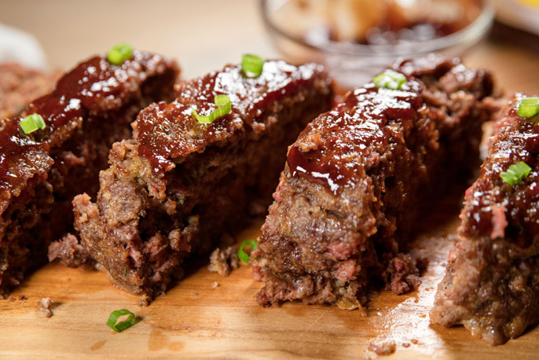

BBQ Meatloaf

Sheet Pan BBQ Meatloaf Dinner
This recipe will tell you all you need to know about preparing the perfect meatloaf in the oven. This will cook enough for 2-4 people (depending on how hungry you are). What you'll end up with is four 1/4 lb. sized delicious hunks of meatloaf, served with your choice of sides.
Ingredients
- 1 lb. ground beef
- 2 large eggs
- 4 Tbsp bread crumbs
- 6 Tbsp BBQ sauce
- 1/2 tsp smoked paprika
- 1/4 tsp garlic powder
- 1/2 tsp salt
- Your choice of BBQ sauce/ketchup to top the meatloaf with
Steps
- Preheat the oven to 375 degrees Fahrenheit
- In a large mixing bowl, thoroughly mix all the meatloaf ingredients together
- Line a large sheet pan with aluminum foil
- Dish the meatloaf onto the sheet pan into four even-sized balls, spaced about 4 inches apart
- At this point, you can add your favorite meatloaf condiment on top. I have my own favorite BBQ sauce I add which creates a delicious coating once done due to the sugar in the BBQ caramelizing in the oven as the meatloaf cooks. Others prefer to use ketchup, so just add whichever condiment you like here.
- Once you've basted the sauce onto the meatloaf, throw the pan into the oven and let cook for 35-45 minutes.
- After the meat is fully cooked, serve and enjoy!